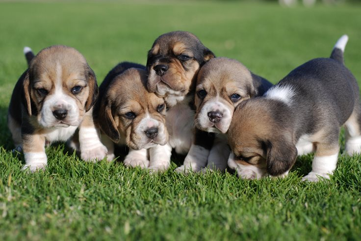
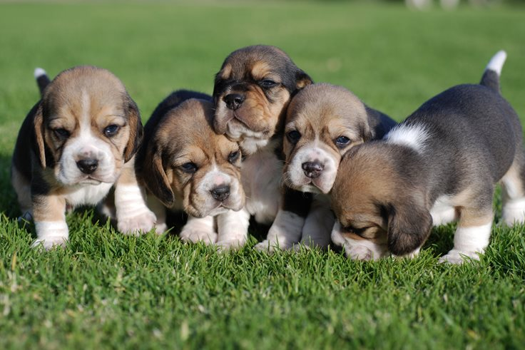
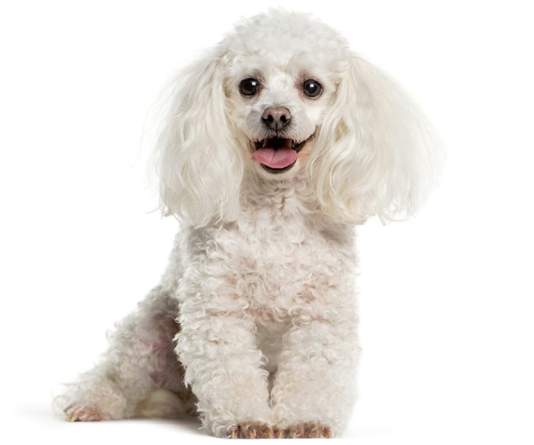
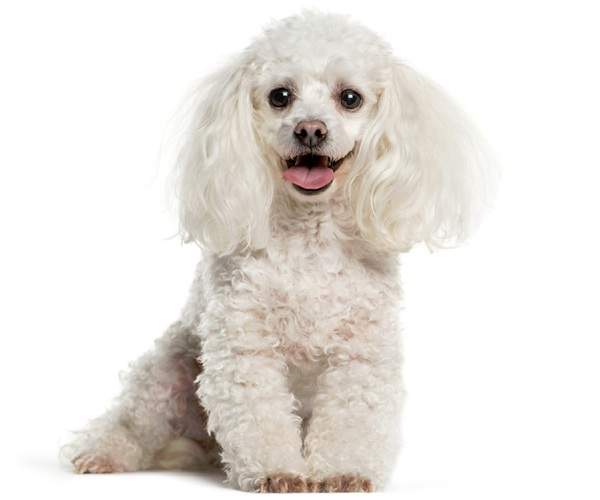

Rascal dog
Without specific details about the type of information you're looking for regarding a "rascal dog," I'll provide some general information about dogs and common behaviors that might be associated with the term "rascal."
1. Behavioral Traits:
Dogs are individuals, and their behavior can vary widely based on breed, temperament, and training.
A "rascal" dog might be mischievous, playful, or prone to getting into trouble. This could involve behaviors like digging, chewing, or stealing objects.
2. Training:
Consistent training and positive reinforcement are crucial for managing any challenging behaviors in dogs.
Obedience training can help establish boundaries and improve the overall behavior of a rambunctious or mischievous dog.
3. Exercise Needs:
Many dogs labeled as "rascals" may simply have excess energy. Sufficient exercise is essential for their physical and mental well-being.
Regular walks, playtime, and engaging activities can help channel their energy in a positive way.
4. Breed Considerations:
Some dog breeds are known for being more energetic, independent, or mischievous than others. Understanding the characteristics of your dog's breed can provide insights into their behavior.
Socialization:
Adequate socialization is crucial for preventing behavioral issues. Proper exposure to various people, animals, and environments helps dogs become well-adjusted and less prone to anxiety or misbehavior.
5. Health Considerations:
Sometimes, undesirable behaviors can be linked to health issues. If a dog suddenly exhibits rascally behavior, it's a good idea to rule out any underlying health concerns by consulting with a veterinarian.
Remember, every dog is an individual, and what might be considered "rascally" behavior in one context could be entirely normal for another. If you have specific concerns or questions about your dog's behavior, consulting with a professional dog trainer or behaviorist is recommended.


 

 
